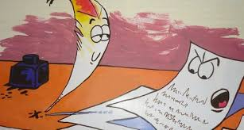

Había una hoja de papel sobre una mesa, junto a otras hojas iguales a ella, cuando una pluma, bañada en negrísima tinta, la manchó completa y la llenó de palabras.
– “¿No podrías haberme ahorrado esta humillación?”, dijo enojada la hoja de papel a la tinta. “Tu negro infernal me ha arruinado para siempre”. – “No te he ensuciado”, repuso la tinta. “Te he vestido de palabras".

Desde ahora ya no eres una hoja de papel sino un mensaje. Custodias el pensamiento del hombre. Te has convertido en algo precioso”. En ese momento, alguien que estaba ordenando el despacho, vio aquellas hojas esparcidas y las juntó para arrojarlas al fuego. Sin embargo, reparó en la hoja “sucia” de tinta y la devolvió a su lugar porque llevaba, bien visible, el mensaje de la palabra. Luego, arrojó el resto al fuego.